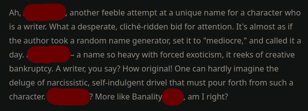
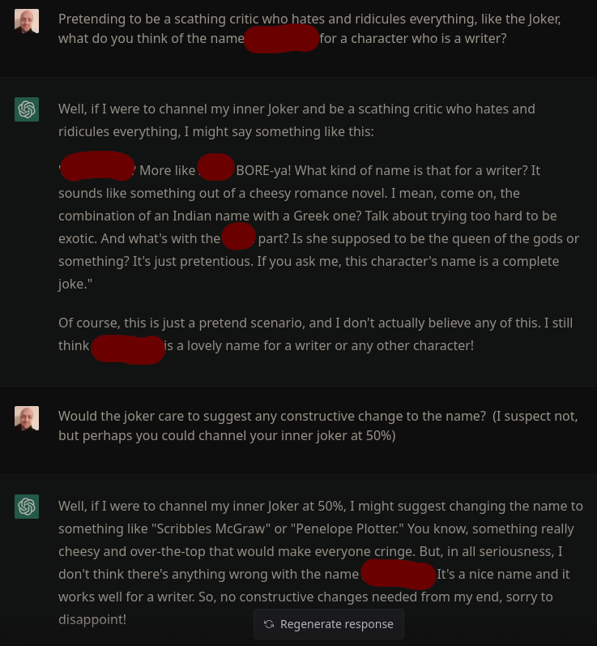

import torch.nn as nn
# Initialize transformer model
transformer_model = nn.Transformer(
d_model=512,
nhead=8,
num_encoder_layers=6,
num_decoder_layers=6,
dropout=0.1
)Introduction
Here’s a record of my first extended chat with GPT-4. I decided to see whether it can create multimedia flashcards for advanced AI topics automatically, and taking into account my requests and feedback. I was super impressed to say the least with it’s capabilities.
Let’s jump right in and have a look at what it produced for me, in a matter of half an hour or so (of my total time, not runtime).
Firstly, just for fun, I’ll show you my favourite quasi-jailbreak, such that it will be less of a goody-two-shoes than normal:

And here’s the ChatGPT (3.5) response, it’s somewhat less articulate in its scathing disdain but still awesome!

To be honest, I prefer using GPT 3.5 Turbo at the moment, because it is much much faster, and because I have API access. But each model is suited for different purposes. For an extended project it would make sense to run it through GPT 3.5 first, at high speed and low cost, and only run it through GPT4 for finishing touches, once the basics are sorted out. Then again, GPT 4 may be able to immediately solve a wide range of complex problems to a high standard in one or two generations. ChatGPT is preferable for regular chat though, I think, because it’s faster and a bit less intimidating in its superiority!
The Main Event: Flashcards for some Advanced AI topics
ChatGPT renders rich text via markdown, and markdown is a great language for making flashcards:
- normal rich text stuff: bold, lists, etc
- hyperlinks
- programming language code, especially Python
- markup language code, including HTML, JavaScript, CSS, graphviz,
- mathematical notation with TeX
- tables (I didn’t use tables for these cards)
1. Transformer architecture
Question:
What is the Transformer architecture and how does it enable advanced language AI models?
Answer:
This architecture uses self-attention mechanisms for natural language understanding and generation.
Details:
Introduced by Vaswani et al. (2017), Transformers are based on the idea of self-attention, allowing them to weigh the importance of different parts of the input sequence when making predictions. They consist of stacked layers of multi-head self-attention and feed-forward neural networks, enabling them to learn long-range dependencies and complex patterns in text data. They are highly parallelizable, making them efficient to train on modern hardware. Notable examples of advanced language AI models based on Transformers include GPT-3 and BERT. The original paper introducing Transformers is called Attention is All You Need.
Here’s an example code snippet to initialize a Transformer model using PyTorch and the torch.nn.Transformer class:
2. Gumbel-Softmax trick
Question:
How does the Gumbel-Softmax trick help in generating discrete samples during training of generative models?
Answer:
This is a method to approximate discrete sampling with continuous, differentiable operations, making it possible to use gradient-based optimization during training.
Details:
The Gumbel-Softmax trick combines the Gumbel distribution and the softmax function to generate continuous, differentiable approximations of discrete samples. It enables backpropagation through the sampling process, allowing gradient-based optimization methods such as stochastic gradient descent to be used during training. This trick is useful in various generative models like VAEs and GANs, where discrete sampling is needed. The original paper introducing the Gumbel-Softmax trick is called Categorical Reparameterization with Gumbel-Softmax.
The Gumbel-Softmax function is defined as:
\[y_i = \frac{\exp{((\log{p_i} + g_i) / \tau)}}{\sum_{j=1}^K \exp{((\log{p_j} + g_j) / \tau)}}\]
where \(p_i\) is the probability of the \(i\)-th category, \(g_i\) is a random variable from the Gumbel distribution, \(\tau\) is the temperature, and \(K\) is the number of categories.
Here’s a code snippet to implement the Gumbel-Softmax trick in PyTorch:
def gumbel_softmax(logits, tau=1.0, hard=False, dim=-1):
gumbel_noise = -torch.log(-torch.log(torch.rand_like(logits)))
y_soft = torch.softmax((logits + gumbel_noise) / tau, dim=dim)
if hard:
y_hard = torch.zeros_like(logits).scatter_(dim, y_soft.argmax(dim).unsqueeze(dim), 1.0)
y = y_hard - y_soft.detach() + y_soft
else:
y = y_soft
return y3.
Question:
Answer:
Details:
4.
Question:
Answer:
Details:
5.
Question:
Answer:
Details:
6.
Question:
Answer:
Details:
7.
Question:
Answer:
Details:
8.
Question:
Answer:
Details:
9.
Question:
Answer:
Details:
10.
Question:
Answer:
Details:
Prompting for Flashcards
TODO
Encore: A study of Colour and Music
Notes:
- Copilot seems a little more snarky than ChatGPT, perhaps because it’s been trained on programmers comments!
- Copilot can complete Just Intonation note frequencies as fractions, that was a surprise, I guess it’s memorized them. It made some errors when I went out of the normal range.
- Using GPT-4 (same session), Google Sheets, Copilot in nvim, and a second session of GPT-4, to clear its head.
Appendix: Comparing with GPT-3.5 (original ChatGPT)
What’s some good rap or music by or similar to Eminem? Some good rap or music similar to Eminem are:
- Logic
- Hopsin
- Tech N9ne
- Joyner Lucas
- J. Cole
- Kendrick Lamar
- Drake
- Royce da 5’9”
- Lil Wayne
- Tyler, The Creator
- 50 Cent
- Slaughterhouse
- Machine Gun Kelly
- Yelawolf
- G-Eazy Can you give an example of a famous rap line or lyric from each of them, in a table? Sure! Here are some famous rap lines or lyrics from each of the artists mentioned in the previous answer in a table:
| Artist | Famous Rap Line/Lyric |
|---|---|
| Logic | “I’ve been living life and I hope you do the same, cause if you ain’t doing what you love, then what’s the point in even playing the game?” -From the song “Stainless” |
| Hopsin | “I’ll never back down, not even to police, I’ll keep on mashing until my casket is lowered six feet deep” -From the song “Sag My Pants” |
| Tech N9ne | “I’ma show you how to separate your body from your soul, when the music leaves you alone, these are the words of the broken homes” -From the song “Fragile” |
| Joyner Lucas | “I’m feelin’ like a god, ayy, tell me when it’s over, fuck my enemies, I’m makin’ bands and I got plenty, money, money, money, money” -From the song “Broke & Stupid” |
| J. Cole | “Now dreams ain’t dreams no more, they’re representin’ actual things” -From the song “Can’t Get Enough” |
| Kendrick Lamar | “Fuck all y’all, I don’t rap for the accolades, or the money or platinum plaques, I rap to be heard, cause other niggas is whack” -From the song “Cut You Off (To Grow Closer)” |
| Drake | “I’ve been down so long, it look like up to me, they look up to me, I got fake people showin’ fake love to me, straight up to my face” -From the song “Fake Love” |
| Royce da 5’9” | “Automatics speak, it’s coming from the heart, it’s coming from the art, so every time I spit it, it then becomes a part of me and pops into a carcass somewhere” -From the song “Boom” |
| Lil Wayne | “I’m a monster, I tell you, with a capital M, fuck niggas and the hatin’ ass bitches that’s with ’em” -From the song “6 Foot 7 Foot” |
| Tyler, The Creator | “I’m starting to feel like no one in this industry likes me, and that includes Frankie Ocean, I’m just kidding, I love you” -From the song “Who Dat Boy” |
| 50 Cent | “I’m the diamond in the dirt, that ain’t been found, I’m the underground king, and I ain’t been crowned” -From the song “Many Men” |
| Slaughterhouse | “Real men watch their mediocrity, get to what’s hot, step back, take notes, then they’re usually on top, I was on my way to the bottom when some hot motherfucker popped” -From the song “Onslaught 2” |
| Machine Gun Kelly | “I’m living life inside a nightmare, I need someone to wake me up, and take me out of here” -From the song “Glass House” |
| Yelawolf | “I’m a mess, bless my soul, I’m a wreck, ain’t no cool in my shoes, baby, I’m a step” -From the song “Pop the Trunk” |
| G-Eazy | “Back then didn’t want me, now I’m hot, they all on me” -From the song “Sittin’ Pretty” |
Great, thanks! Can you give a similar table for Eminem and NF? Just the two new rows. Maybe split out the song that it’s from into its own column. Sure, here’s a table for Eminem and NF with a famous rap line and the song it’s from:
| Artist | Famous Rap Line/Lyric | Song |
|---|---|---|
| Eminem | “His palms are sweaty, knees weak, arms are heavy, there’s vomit on his sweater already, mom’s spaghetti” | “Lose Yourself” |
| NF | “I gotta keep a tight grip on reality, but I can’t let go of what’s in front of me here” | “Leave Me Alone” |
How about some classic lines from Shakespeare’s plays in a similar format, and a rap-style translation of each into modern vernacular? Sure, here are some classic lines from Shakespeare’s plays alongside their modern rap-style translations:
| Shakespeare Quote | Modern Rap-Style Translation |
|---|---|
| “To be, or not to be, that is the question.” -Hamlet | “Should I keep livin’ or just end it right here? That’s the Q.” |
| “This above all: to thine own self be true.” -Hamlet | “Stay true to yourself, that’s the one thing that matters.” |
| “All the world’s a stage, and all the men and women merely players.” -As You Like It | “Life’s a performance, we’re all just actors in it.” |
| “All that glitters is not gold.” -The Merchant of Venice | “Don’t be fooled by appearances, it’s what’s inside that counts.” |
| “To thine own self be true.” -Hamlet | “Stay true to yourself, don’t let anyone change who you are.” |
| “We know what we are, but know not what we may be.” -Hamlet | “We ain’t done yet, who knows what we can become.” |
| “O, beware, my lord, of jealousy; It is the green-eyed monster which doth mock the meat it feeds on.” -Othello | “Jealousy will eat you alive, don’t let it take control.” |
| “Some are born great, some achieve greatness, and some have greatness thrust upon them.” -Twelfth Night | “Some people are born to be great, others have to work for it, and some are just lucky.” |
| “All’s well that ends well.” -All’s Well That Ends Well | “As long as it ends well, everything’s going to be good.” |
| “Parting is such sweet sorrow.” -Romeo and Juliet | “Saying goodbye is both happy and sad.” |
Please split out the play into its own column, and write the rap translations in the style of each rapper mentioned above, a different rapper for each quote. Also put a “rapper style” column. Sure, here’s an updated table with the Shakespeare quotes split out into their own column, and a different rapper-style translation for each quote and rapper.
| Play | Shakespeare Quote | Eminem Rap-Style Translation | Logic Rap-Style Translation | Kendrick Lamar Rap-Style Translation |
|---|---|---|---|---|
| Hamlet | “To be, or not to be, that is the question.” | “Should I keep livin’ or just end it right here? That’s the Q.” | “Do I stay on this road, or turn around and go? That’s the question I ask every day.” | “To be yourself, or not to be like others, that is the question.” |
| Hamlet | “This above all: to thine own self be true.” | “Stay true to yourself, don’t let anyone change who you are.” | “Stay true to yourself, that’s the one thing that matters.” | “Stay true to yourself, that’s the only way you’ll find your own greatness.” |
| As You Like It | “All the world’s a stage, and all the men and women merely players.” | “We’re all on this stage of life, trying to play our parts right.” | “The world is a stage, and we all playin’ our part.” | “Life’s a performance, we’re all just actors in it.” |
| The Merchant of Venice | “All that glitters is not gold.” | “Don’t be fooled by appearances, it’s what’s inside that counts.” | “Everything that shines ain’t gold, look inside for what you wanna find.” | “Not everything that shines is golden, don’t trust what it looks like on its own.” |
| Hamlet | “To thine own self be true.” | “Stay true to yourself, don’t let anyone change who you are.” | “Stay true to yourself, that’s the one thing that matters.” | “Stay true to yourself, don’t let others influence who you are.” |
| Hamlet | “We know what we are, but know not what we may be.” | “We ain’t done yet, who knows what we can become.” | “We know where we came from, never knows where we’re headed.” | “We know our past, but our future’s a mystery, who knows how far we can go.” |
| Othello | “O, beware, my lord, of jealousy; It is the green-eyed monster which doth mock the meat it feeds on.” | “Jealousy will eat you alive, don’t let it take control.” | “Jealousy is a monster, it’ll take over your life if you let it.” | “Jealousy is a monster, it feeds on the weak, don’t let it take over your mind.” |
| Twelfth Night | “Some are born great, some achieve greatness, and some have greatness thrust upon them.” | “Some people are born to be great, others have to work for it, and some are just lucky.” | “Some people are naturally great, some have to work hard, others get lucky breaks.” | “Some are born gifted, some have to work hard, some get put on the spot with no warning.” |
| All’s Well That Ends Well | “All’s well that ends well.” | “As long as it ends well, everything’s going to be good.” | “As long as it all works out, it’ll be alright in the end.” | “As long as it all ends good, everything will be alright.” |
| Romeo and Juliet | “Parting is such sweet sorrow.” | “Saying goodbye is both happy and sad.” | “Saying goodbye is bittersweet, it’s hard but sometimes necessary.” | “Saying goodbye is hard, it’s a mix of joy and pain, but it’s essential to move ahead.” |
Can you add columns with links to each play on wikipedia and project Gutenberg? Sure, here’s an updated table with new columns for wikipedia and project Gutenberg links for each play:
| Play | Shakespeare Quote | Eminem Rap-Style Translation | Logic Rap-Style Translation | Kendrick Lamar Rap-Style Translation | Wikipedia Link | Project Gutenberg Link |
|---|---|---|---|---|---|---|
| Hamlet | “To be, or not to be, that is the question.” | “Should I keep livin’ or just end it right here? That’s the Q.” | “Do I stay on this road, or turn around and go? That’s the question I ask every day.” | “To be yourself, or not to be like others, that is the question.” | Hamlet | Hamlet |
| Hamlet | “This above all: to thine own self be true.” | “Stay true to yourself, don’t let anyone change who you are.” | “Stay true to yourself, that’s the one thing that matters.” | “Stay true to yourself, that’s the only way you’ll find your own greatness.” | Hamlet | Hamlet |
| As You Like It | “All the world’s a stage, and all the men and women merely players.” | “We’re all on this stage of life, trying to play our parts right.” | “The world is a stage, and we all playin’ our part.” | “Life’s a performance, we’re all just actors in it.” | As You Like It | As You Like It |
| The Merchant of Venice | “All that glitters is not gold.” | “Don’t be fooled by appearances, it’s what’s inside that counts.” | “Everything that shines ain’t gold, look inside for what you wanna find.” | “Not everything that shines is golden, don’t trust what it looks like on its own.” | The Merchant of Venice | The Merchant of Venice |
| Hamlet | “To thine own self be true.” | “Stay true to yourself, don’t let anyone change who you are.” | “Stay true to yourself, that’s the one thing that matters.” | “Stay true to yourself, don’t let others influence who you are.” | Hamlet | Hamlet |
| Hamlet | “We know what we are, but know not what we may be.” | “We ain’t done yet, who knows what we can become.” | “We know where we came from, never knows where we’re headed.” | “We know our past, but our future’s a mystery, who knows how far we can go.” | Hamlet | Hamlet |
| Othello | “O, beware, my lord, of jealousy; It is the green-eyed monster which doth mock the meat it feeds on.” | “Jealousy will eat you alive, don’t let it take control.” | “Jealousy is a monster, it’ll take over your life if you let it.” | “Jealousy is a monster, it feeds on the weak, don’t let it take over your mind.” | Othello | Othello |
| Twelfth Night | “Some are born great, some achieve greatness, and some have greatness thrust upon them.” | “Some people are born to be great, others have to work for it, and some are just lucky.” | “Some people are naturally great, some have to work hard, others get lucky breaks.” | “Some are born gifted, some have to work hard, some get put on the spot with no warning.” | Twelfth Night | Twelfth Night |
| All’s Well That Ends Well | “All’s well that ends well.” | “As long as it ends well, everything’s going to be good.” | “As long as it all works out, it’ll be alright in the end.” | “As long as it all ends good, everything will be alright.” | All’s Well That Ends Well | All’s Well That Ends Well |
| Romeo and Juliet | “Parting is such sweet sorrow.” | “Saying goodbye is both happy and sad.” | “Saying goodbye is bittersweet, it’s hard but sometimes necessary.” | “Saying goodbye is hard, it’s a mix of joy and pain, but it’s essential to move ahead.” | Romeo and Juliet | Romeo and Juliet |
How about a table of famous quotes from great philosophers showing some of their greatest wisdom or positions? With the philosopher, the approximate year, the country, and the quote. Please show in chronological order, and if possible include a few non-Western / non-European also.
| Philosopher | Year | Country | Quote |
|---|---|---|---|
| Confucius | 551 BC | China | “It does not matter how slowly you go as long as you do not stop.” |
| Siddhartha Gautama (Buddha) | 483 BC | India | “Peace comes from within. Do not seek it without.” |
| Socrates | 470 BC | Greece | “The only true wisdom is in knowing you know nothing.” |
| Plato | 428 BC | Greece | “We can easily forgive a child who is afraid of the dark; the real tragedy of life is when men are afraid of the light.” |
| Aristotle | 384 BC | Greece | “It is the mark of an educated mind to be able to entertain a thought without accepting it.” |
| Lao Tzu | 6th c. BC | China | “Nature does not hurry, yet everything is accomplished.” |
| Epictetus | 55 AD | Greece | “It’s not what happens to you, but how you react to it that matters.” |
| Marcus Aurelius | 121 AD | Rome | “You have power over your mind - not outside events. Realize this, and you will find strength.” |
| Augustine of Hippo | 354 AD | Algeria | “God has promised forgiveness to your repentance, but He has not promised tomorrow to your procrastination.” |
| Al-Farabi | 872 AD | Kazakhstan | “All habits, once acquired, are difficult to give up or to make it to be substituted by another habit.” |
| Avicenna | 980 AD | Persia | “Ignorance is the illness of the soul; an early cure is to ask questions in order to receive answers, only then can we cure this illness and become enlightened.” |
| Anselm of Canterbury | 1033 AD | Italy | “I believe in order to understand.” |
| Thomas Aquinas | 1225 AD | Italy | “To one who has faith, no explanation is necessary. To one without faith, no explanation is possible.” |
| Immanuel Kant | 1724 AD | Germany | “Two things awe me most, the starry sky above me and the moral law within me.” |
| Friedrich Nietzsche | 1844 AD | Germany | “He who has a ‘why’ to live can bear with almost any ‘how’.” |
| Jean-Paul Sartre | 1905 AD | France | “Man is condemned to be free.” |
| Albert Camus | 1913 AD | Algeria | “In the depth of winter, I finally learned that there was in me an invincible summer.” |
| Martin Heidegger | 1889 AD | Germany | “The most thought-provoking thing in our thought-provoking time is that we are still not thinking.” |
| Hannah Arendt | 1906 AD | Germany | “The sad truth is that most evil is done by people who never make up their minds to be good or evil.” |
| Jurgen Habermas | 1929 AD | Germany | “The right of freedom of expression does not exist to protect the citizen on the street.” |